Ausgabe vom 2. September 2026
Alle Meldungen
Netz & Technik
Tarife & Angebote
 1&1 legt Top-Smartphones passende Kopfhörer bei
1&1 legt Top-Smartphones passende Kopfhörer bei
 Digi verdoppelt 1-Gbit/s-Tarif auf 2 Gbit/s
Digi verdoppelt 1-Gbit/s-Tarif auf 2 Gbit/s
 Telekom bewirbt Unlimited mit bestem 5G-Netz Deutschlands
Telekom bewirbt Unlimited mit bestem 5G-Netz Deutschlands
Satellit & Direct-to-Cell
Regulierung & Politik
Geld & Übernahmen
 Arcep muss SFR-Verkauf an drei Betreiber überwachen
Arcep muss SFR-Verkauf an drei Betreiber überwachen
Partnerschaften
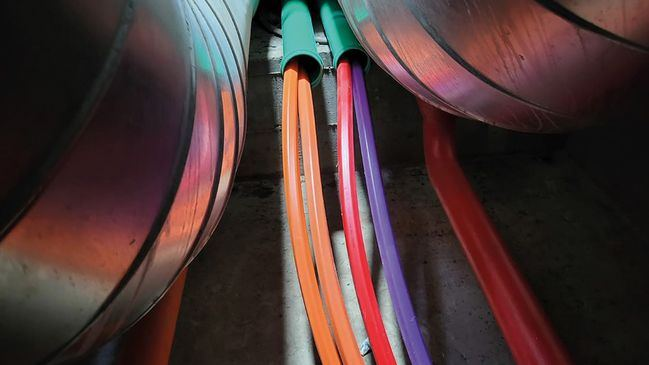
O2 startet Festnetz über Glasfaser in Berlin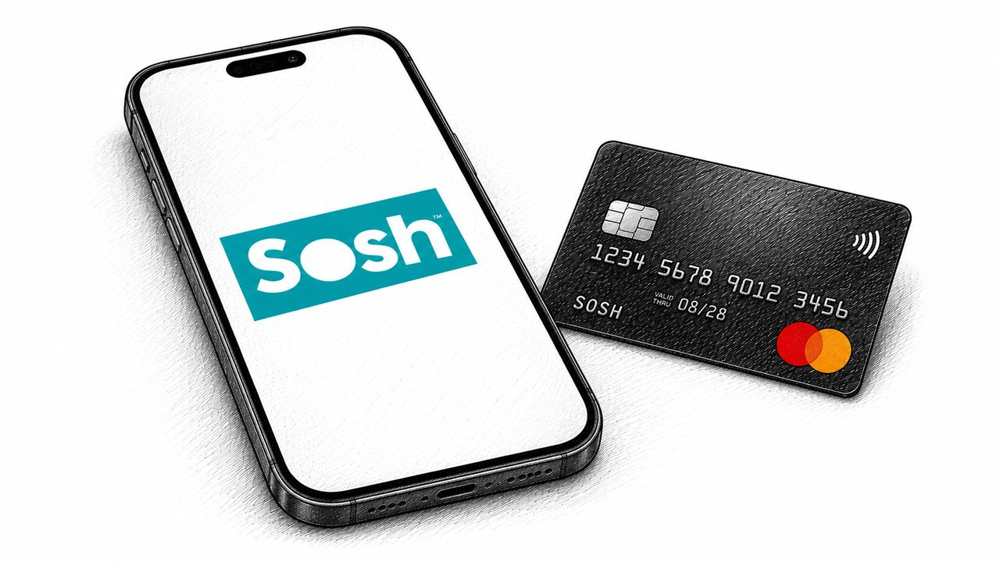
Orange startet Wero für Sosh-Rechnungen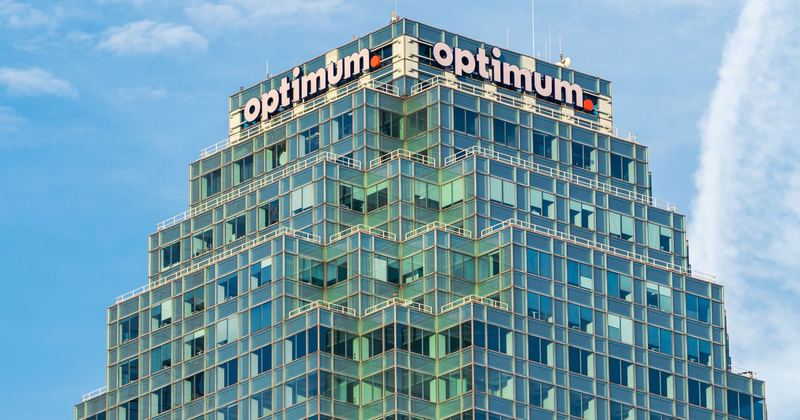
Optimum erweitert MVNO-Deal mit T-MobileVermischtes
Netz & Technik
12 Meldungen
Auch berichtet von O2 Telefónica Deutschland
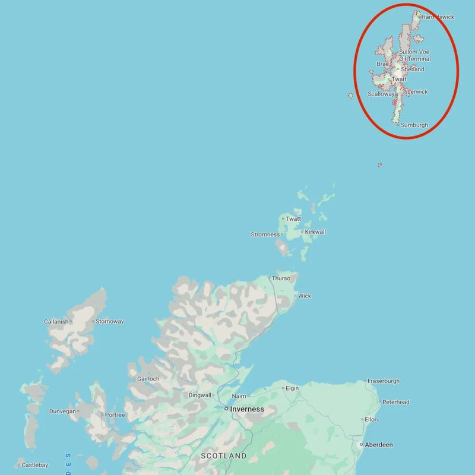
Machbarkeitsstudie für neues Seekabel nach Shetland beginnt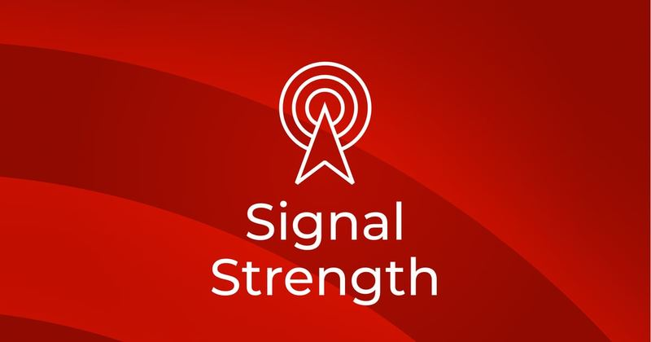
Omdia analysiert Qualcomms 6G-Pläne und mögliche Umsatzbringer
Tarife & Angebote
31 Meldungen

 iPhone 18 Pro: neun Leaks vor Apples September-Event
iPhone 18 Pro: neun Leaks vor Apples September-Event
Auch berichtet von Telepolis (Polen), Xataka Móvil, Xataka Móvil
 Packard Bell bringt 69-Euro-4G-Telefon für Offline-Zeiten
Packard Bell bringt 69-Euro-4G-Telefon für Offline-Zeiten
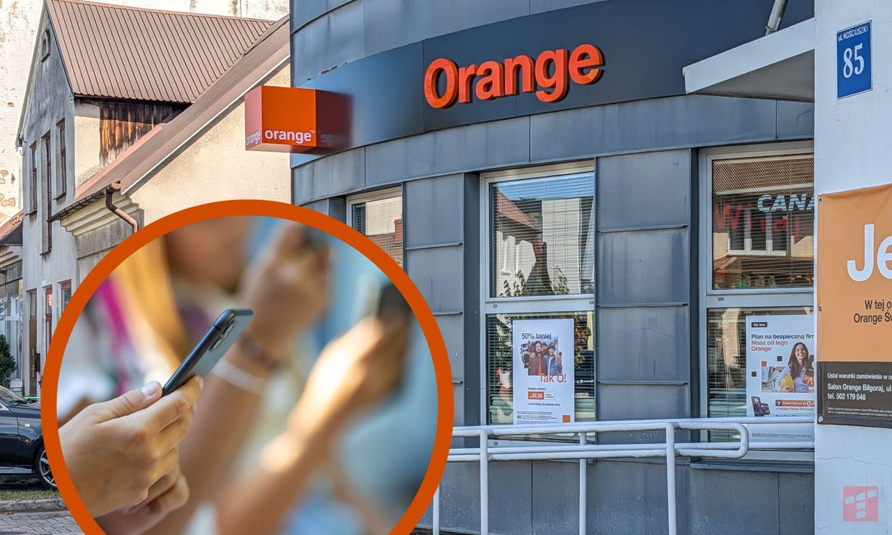
Orange schenkt Prepaid-Kunden zwei Monate Kinderschutz-App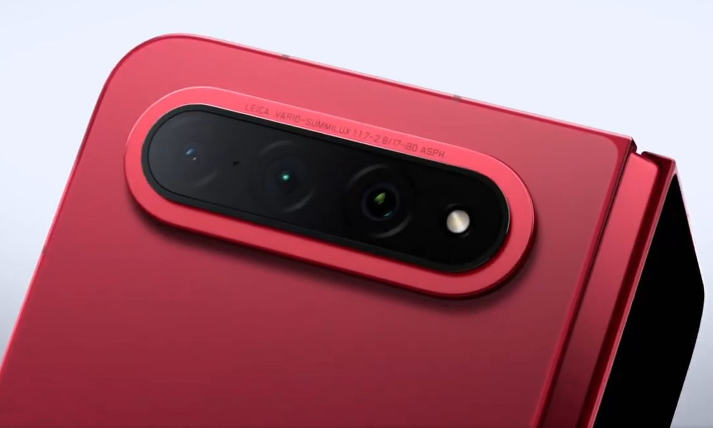
Xiaomi bringt Foldable 18 Fold am 7. SeptemberAuch berichtet von TelecomTalk, TelecomTalk
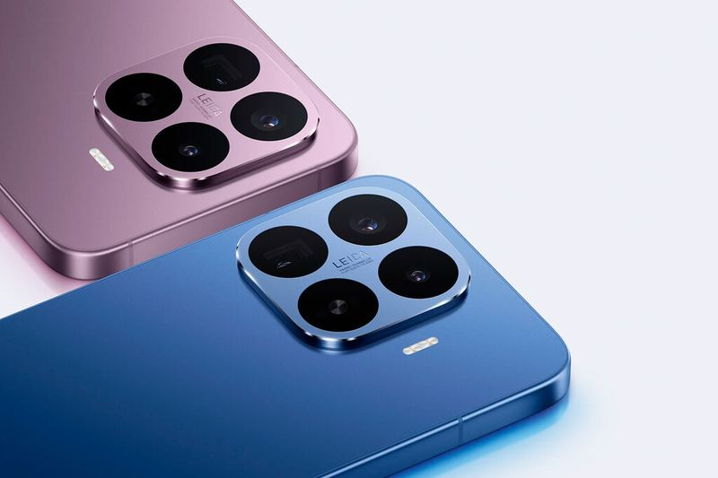
Xiaomi senkt High-End-Preis um 250 Euro Freebox bündelt wieder Gratis-Spiele für Prime-Kunden
Freebox bündelt wieder Gratis-Spiele für Prime-Kunden
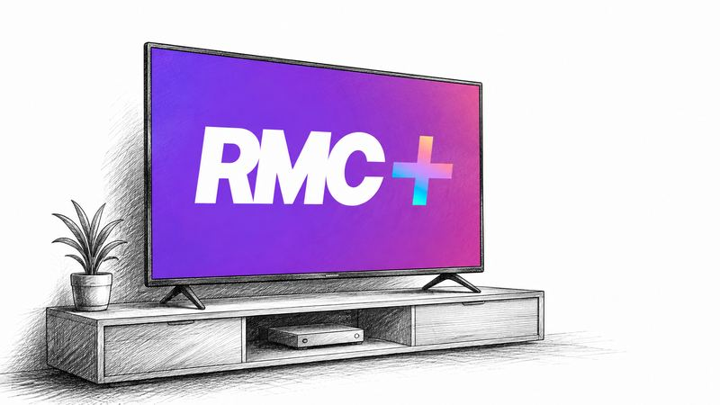
Kostenloses Streaming RMC+ startet, Freebox noch ohne Vollzugriff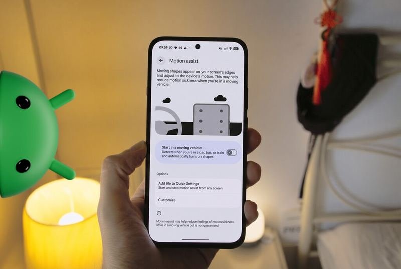
Google bringt Android-Funktionen gegen Reiseübelkeit und Objektsuche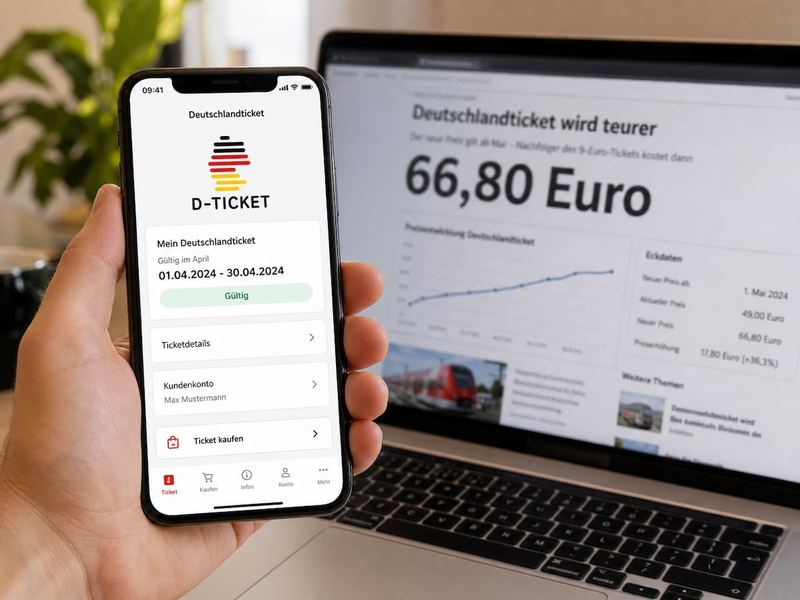
Deutschlandticket soll 2027 vier Euro teurer werden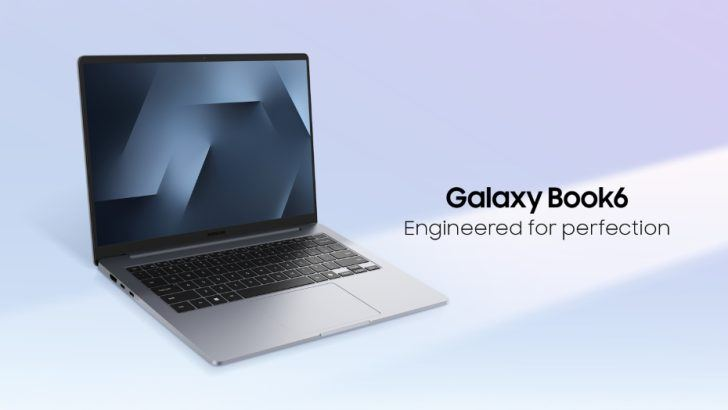
Samsung bringt Galaxy Book6 ab 799 Dollar Comcast startet neue KI-Plattform für Videodienste
Comcast startet neue KI-Plattform für Videodienste
Regulierung & Politik
4 Meldungen

Partnerschaften
4 Meldungen
Frühere Ausgaben
2. September 2026
669 neue Meldungen
28. August 2026
77 neue Meldungen
27. August 2026
1046 neue Meldungen
26. August 2026
967 neue Meldungen
25. August 2026
866 neue Meldungen
21. August 2026
663 neue Meldungen
19. August 2026
926 neue Meldungen
17. August 2026
897 neue Meldungen
15. August 2026
810 neue Meldungen
14. August 2026
944 neue Meldungen
8. August 2026
256 neue Meldungen
7. August 2026
381 neue Meldungen
6. August 2026
642 neue Meldungen
5. August 2026
426 neue Meldungen
4. August 2026
124 neue Meldungen
31. Juli 2026
220 neue Meldungen
28. Juli 2026
9 neue Meldungen
27. Juli 2026
49 neue Meldungen
26. Juli 2026
4 neue Meldungen
25. Juli 2026
11 neue Meldungen
21. Juli 2026
185 neue Meldungen
20. Juli 2026
27 neue Meldungen
19. Juli 2026
233 neue Meldungen
17. Juli 2026
257 neue Meldungen
16. Juli 2026
1991 neue Meldungen